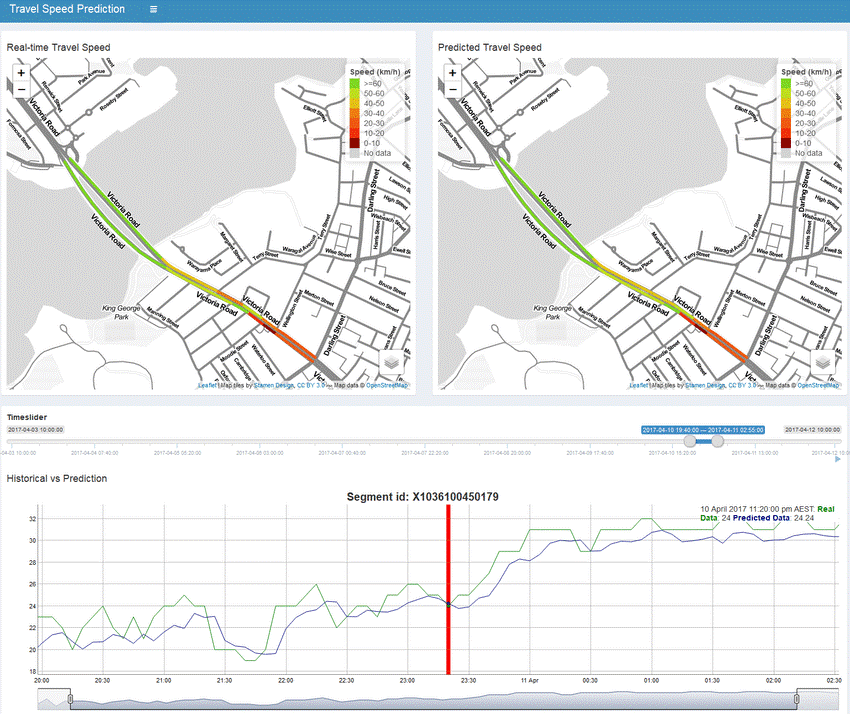
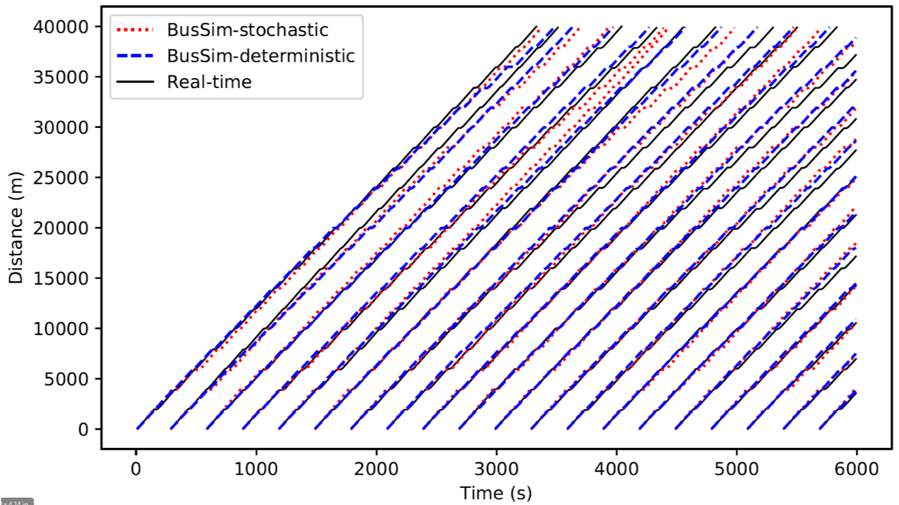

Data-driven cities: bringing together machine learning and city simulation
Minh Kieu
Lecturer
University of Auckland
These slides:
http://bit.ly/infrastructure-MK
Acknowledgements
Dr Hoang Nguyen, Data61, CSIRO
Dr Yuming Ou, University Technology Sydney
Prof Nicolas Malleson, University of Leeds
Dr Eric Daub, Alan Turing Institute
Challenges to policy makers
Transport – how to reduce congestion?
Environment – how to deal with climate change?
Economy – how can we address the housing shortage and affordability?
Health - can we encourage more active travel?
How do we use science to support policy makers?
Big Data of individuals are key
Potential Urban Flow Data: Social Media


Urban Flow Data: Mobile data
Large population coverage

Private, unknown methodology, privacy concerns, coarse resolution (?)
Urban Flow Data: Google Travel time
Nguyen et al. (2019) A Deep Learning System for Travel Speed Predictions on Multiple Arterial Road Segments. Transportation Research Record: Journal of the Transportation Research Board
Urban Flow Data: Smart Card data

Kieu et al. (2018) Large-scale transit market segmentation with spatial-behavioural features. Transportation Research Part C: Emerging Technologies 90, 97-113
Kieu et al. (2014) Passenger Segmentation Using Smart Card Data. IEEE Transactions of Intelligent Transport Systems 16 (3), 1537 - 1548
Big Data in cities: Summary
Challenges
Skewness
Prolific users distort patterns
Spatial accuracy
Missing data
Bias
E.g. Choose a number between 1, 2, 3 and 4
Complicated!!
Messy, and "too big for Excel"
Benefits
Volume
Potential for large scale analysis
Velocity
Streaming / regularly updated
Potential for dynamic models
Need to consolidate data from multiple sources
Require models that can represent complex systems

Why is it difficult to model urban systems?
Extremely complex system:
Attributes of the environment (e.g. individual houses, pubs, transport hubs, parks, etc.).
Personal characteristics (heterogeneity).
Features of the local community.
Physical layout of the neighbourhood (e.g. street networks).
Why is it difficult to model urban systems?
Traditional approaches often work at large scales, struggle to predict local effects
Computationally convenient
Cities are built from the bottom up
Issues in Agent-based modelling: Divergence
The reality is dynamic: Complex models may explain cities, but diverge over time.
The reality is stochastic: No set of parameters would perfectly explain the real system.
There is no systematic mechanism to incorporate new data into agent-based models
Objective
Agent-based modelling for short-term prediction
Running Agent-based models in real-time
Challenges
Agent-based models are complex, non-linear and high-dimensionality
Agent-based models are computationally expensive
Data Assimilation
Improve estimates of the true system state by combining noisy, real-world observations and model estimates

Data Assimilation for Agent-Based Models

Project info:
https://dust.leeds.ac.uk/
Example 1
Bus Simulation with a Particle Filter

Context: simulate bus routes in real time
We have GPS bus positions, but to make good term forecasts we need to be able to infer other factors
Number of people waiting at bus stops
Number of people on the bus
Surrounding traffic levels
Aim: test a particle filter as the means of assimilating real-time GPS positions into a model.
Data Assimilation on Bus Simulation

Bus Simulation
LM Kieu, N Malleson, A Heppenstall (2019) Dealing with uncertainty in agent-based models for short-term predictions , Royal Society of Open Science 7 (1), 191074>
LM Kieu, D Ngoduy, N Malleson, E Chung (2019) A stochastic schedule-following simulation model of bus routes , Transportmetrica B: Transport Dynamics 7 (1), 1588-1610
Bus Simulation - No Data Assimilation
Bus Simulation with a Particle Filter
Example 2
Crowd Simulation
Context: simulate a crowd in real time
What methods can we use to assimilate data?
How much data do we need?
Track every individual?
Track some individuals?
Just aggregate counts (e.g. number of people passing a footfall camera)
Case study: a simple, hypothetical train station (Station Sim)
Crowd Simulation with a Particle Filter

N Malleson, K Minors, LM Kieu, JA Ward, AA West, A Heppenstall (2019) Simulating Crowds in Real Time with Agent-Based Modelling and a Particle Filter, arXiv preprint arXiv:1909.09397
StationSim with Unscented Kalman Filter
Prediction of Agents' location from aggregated data
Challenges
Data assimilation can change the model's states but not the underlying rules
We can do it but with very simple models
What's next: Emulators of Agent-Based Models

How to run multiple instances of ABMs with little computation burden?
Can we build another model to represent the ABM ?
What methods are suitable?
How good these surrogate models need to be?
Case study: Station Sim but using Social Force Model
Emulator of StationSim model: Random Forest Regression

Emulator of StationSim model: Gaussian Process

For more information about what we're doing
Transport Modelling for urban well-being in Hanoi, Vietnam
Investigate how alternative transport models may be able to improve urban well-being in Vietnam.
Resilience to Nature’s Challenges programme
Enhancing New Zealand’s ability to anticipate, adapt and thrive in the face of ever-changing natural hazards.
Development of robust inductive power transfer pavement systems for electric vehicles.
How to transfer electrical power from a source to an electrical load, without synthetic conductors to charge electric vehicles on-the-fly